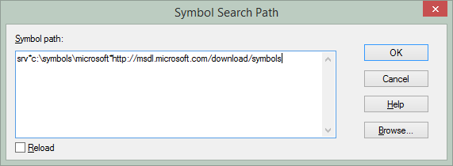

parent nodes: WindbgWiki
Customize
Contents:
Back
Symbol Path
Set the symbol path to download the public symbols for Microsoft DLL in order to see what is going on in the system layer.
Either :
Set on machine the _NT_SYMBOL_PATH environment variable (will be also available in Visual Studio)
_NT_SYMBOL_PATH = srv*c:\debug\symbols\microsoft*http://msdl.microsoft.com/download/symbols
or set in Windbg with command .sympath srv*c:\debug\symbols\microsoft*http://msdl.microsoft.com/download/symbols
or set in Windbg via the menu "File > Symbol File Path..."

Workspaces customization
Before loading a theme, it's recommended to clear all the workspace data. In Windbg, via the menu "File > Clear Workspace..". Select "Clear All" in the pop-up window and then click "Ok".
Choose one of the themes provided in the "themes" sub-directory of Windbg. For example, on my machine, the directory is C:\Program Files (x86)\Windows Kits\8.1\Debuggers\x86\themes
Set the symbol path, see above.
Set the source path to SRV*;C:\debug\source
Tweak the theme
Add all the windows you wish to see (Command, Calls, Watch, Locals, Registers …) and adjust their positioning.
To change the font, choose Font… from the View menu.
To change the syntax colors, choose Options… from the View menu. Then, in the Colors area, select a syntax element and click the Change button to change the color.
Optionally set paths (symbol path, source path, executable image path …) to make sure that Windbg can locate all of the files that it needs to debug effectively.
Save the workspace via the menu "File > Save Workspace"
Samples
Links
previous: Back
parents: WindbgWiki
attributes: [tree_position: 2]